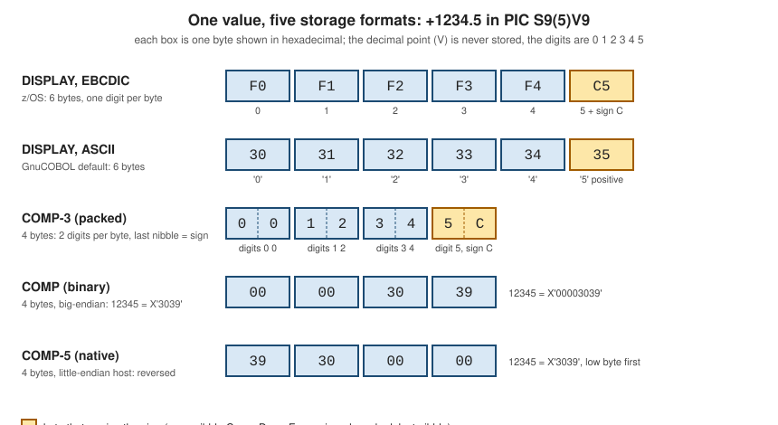

USAGE and Numeric Representation
|
This content was generated with the assistance of AI and should be verified against the official documentation before being relied on in production. |
This page is written against ISO/IEC 1989:2023 (edition 3, January 2023; an edition 4 is upcoming, in DIS ballot), GnuCOBOL 3.2
(28 July 2023, the latest release) and IBM Enterprise COBOL for z/OS 6.5 (PTFs through September 2026), and was checked on
2026-10-20. Every portable example below was compiled with cobc -x -Wall (GnuCOBOL 3.2.0, fixed reference format) and run, without
a warning except in the ones labelled deliberately wrong; the output shown is real, and where the text says that an example was also run with -std=ibm or another option,
the differences are shown. The programs ran on a little-endian arm64 host, which matters only for COMP-5 and the floating-point
bytes, and those lines say so. The ISO standard is paywalled and was not read: the rules come from the vendor manuals. The IBM
statements come from the Enterprise COBOL documentation and were not run here (z/OS; not run here).
A number in COBOL is more than a value: it is a value and a storage format. The PICTURE clause says how many digits the item
has and where the decimal point and the sign are
(PICTURE Clause); the USAGE clause says how those digits are laid out in
bytes. The same value +1234.5 in PIC S9(5)V9 can occupy six bytes of characters, four bytes of packed nibbles or four bytes
of a binary integer, and which one is used decides the file record size, how fast arithmetic is, how the field must be treated
when it crosses to another language or another machine, and what a hex dump of it looks like. This page covers every usage the
compilers support, the exact bytes of each, the compiler options that change how binary and decimal data are processed
(TRUNC, NUMPROC, GnuCOBOL’s binary-size and binary-truncate), and how to look at the bytes. The surrounding data
description is in Data Division and Level Numbers, the
arithmetic that uses these items in Arithmetic and COMPUTE, and
the character-set side of NATIONAL and UTF-8 in
National UTF-8 and Code Pages.
The USAGE clause
USAGE is an optional clause of a data description entry, written as USAGE IS COMP-3 or just COMP-3 (the words USAGE
and IS are optional). It may be given on any level number except 66 and 88. On a group item it applies to every elementary item
in the group, and an elementary item may not contradict the group’s usage. When no usage is written, it is implied from the
PICTURE: DISPLAY when the picture has no G, N or U; NATIONAL for an N picture only when the
NSYMBOL(NATIONAL) option is in effect, DISPLAY-1 (DBCS) when NSYMBOL(DBCS) is; UTF-8 for a U picture
(Enterprise COBOL 6.5).
A computational item is one meant for arithmetic: it must be numeric, and its picture may contain only 9, S, V and P.
Enterprise COBOL limits it to 18 decimal digits, except PACKED-DECIMAL, which holds 18 digits under ARITH(COMPAT) (the
default) and 31 under ARITH(EXTEND). GnuCOBOL accepts up to 38 digits in any numeric field, but a binary item is limited to 18
digits and cobc says so. This program is deliberately wrong: a 19-digit binary item and a 39-digit packed item (the first
message is the 38-digit limit, the second the binary one):
IDENTIFICATION DIVISION.
PROGRAM-ID. WIDE.
DATA DIVISION.
WORKING-STORAGE SECTION.
01 W-1 PIC 9(31) COMP-3.
01 W-2 PIC 9(38) COMP-3.
01 W-3 PIC 9(19) COMP.
01 W-4 PIC 9(38).
01 W-5 PIC 9(39) COMP-3.
PROCEDURE DIVISION.
DISPLAY FUNCTION LENGTH(W-1) " " FUNCTION LENGTH(W-2) " "
FUNCTION LENGTH(W-3) " " FUNCTION LENGTH(W-4)
STOP RUN.wide.cob:9: error: numeric field cannot be larger than 38 digits
7 | 01 W-3 PIC 9(19) COMP.
8 | 01 W-4 PIC 9(38).
9 > 01 W-5 PIC 9(39) COMP-3.
10 | PROCEDURE DIVISION.
11 | DISPLAY FUNCTION LENGTH(W-1) " " FUNCTION LENGTH(W-2) " "
wide.cob:7: error: 'W-3' binary field cannot be larger than 18 digits
5 | 01 W-1 PIC 9(31) COMP-3.
6 | 01 W-2 PIC 9(38) COMP-3.
7 > 01 W-3 PIC 9(19) COMP.
8 | 01 W-4 PIC 9(38).
9 | 01 W-5 PIC 9(39) COMP-3.The usages at a glance
The table lists every usage with its storage. "z/OS" means Enterprise COBOL 6.5 (from its Language Reference and Programming Guide); "GnuCOBOL" means 3.2.0 as measured by the programs on this page and described in its Programmer’s Guide.
| Usage | Meaning and picture | Bytes | Notes |
|---|---|---|---|
|
zoned decimal, or characters; the default |
one per picture position ( |
the sign is overpunched in the zone of one digit byte unless |
|
packed decimal, two digits per byte, sign in the last nibble |
digits plus one, divided by two, rounded up |
the same in both compilers; an odd digit count wastes no half byte |
|
binary integer, scaled by the picture |
1 to 4 digits: 2, 5 to 9: 4, 10 to 18: 8 |
big-endian on z/OS; big-endian in GnuCOBOL by default; |
|
native binary, scaled by the picture |
2, 4 or 8 on z/OS; GnuCOBOL also uses 1 for one or two digits (see below) |
holds the full range of the bytes; native byte order of the machine |
|
GnuCOBOL extensions (COMP-6 is unsigned packed decimal) |
1, 2, 4, 8 and so on |
not in Enterprise COBOL 6.5; |
|
single-precision floating point; no picture |
4 |
hexadecimal floating point on z/OS ( |
|
double-precision floating point; no picture |
8 |
hexadecimal floating point on z/OS ( |
|
IEEE 754 decimal floating point (COBOL 2014); no picture |
8 and 16 |
GnuCOBOL only; not in the Enterprise COBOL 6.5 |
|
index data item, holds the value of a table index |
4 in GnuCOBOL |
used with |
|
address of a data item |
4 or 8 on z/OS depending on |
|
|
address of an entry point |
as for |
GnuCOBOL spells the procedure pointer |
|
UTF-16 characters (CCSID 1200), two bytes each |
two per position |
GnuCOBOL 3.2 accepts the word but warns that it is unfinished |
|
UTF-8 characters (CCSID 1208), |
one to four per character |
Enterprise COBOL 6.3 and later; GnuCOBOL 3.2 warns that it is unfinished |
|
DBCS characters, two bytes each |
two per position |
Enterprise COBOL; GnuCOBOL 3.2 accepts it with the same unfinished warning as |
|
reference to an object of a class |
4 or 8 depending on |
object-oriented COBOL; not accepted by GnuCOBOL 3.2 |
Source: Enterprise COBOL 6.5 Language Reference: USAGE clause, Computational items and GnuCOBOL 3.2 Programmer’s Guide: USAGE
The storage sizes are easy to confirm with FUNCTION LENGTH. This program declares one item of each common usage and prints
its length; it was run twice, with the defaults and with -std=ibm.
IDENTIFICATION DIVISION.
PROGRAM-ID. SIZES.
DATA DIVISION.
WORKING-STORAGE SECTION.
01 ITEM-01 PIC 9(2) COMP.
01 ITEM-02 PIC 9(4) COMP.
01 ITEM-03 PIC 9(5) COMP.
01 ITEM-04 PIC 9(9) COMP.
01 ITEM-05 PIC 9(10) COMP.
01 ITEM-06 PIC 9(18) COMP.
01 ITEM-07 PIC S9(4) BINARY.
01 ITEM-08 PIC 9(2) COMP-5.
01 ITEM-09 PIC 9(5) COMP-5.
01 ITEM-10 PIC S9(7) PACKED-DECIMAL.
01 ITEM-11 PIC 9(6) COMP-3.
01 ITEM-12 PIC S9(18) COMP-3.
01 ITEM-13 COMP-1.
01 ITEM-14 COMP-2.
01 ITEM-15 FLOAT-SHORT.
01 ITEM-16 FLOAT-LONG.
01 ITEM-17 PIC 9(7).
01 ITEM-18 PIC S9(7).
01 ITEM-19 PIC S9(7)
SIGN TRAILING SEPARATE.
01 ITEM-20 INDEX.
01 ITEM-21 POINTER.
PROCEDURE DIVISION.
DISPLAY "9(2) COMP " FUNCTION LENGTH(ITEM-01)
DISPLAY "9(4) COMP " FUNCTION LENGTH(ITEM-02)
DISPLAY "9(5) COMP " FUNCTION LENGTH(ITEM-03)
DISPLAY "9(9) COMP " FUNCTION LENGTH(ITEM-04)
DISPLAY "9(10) COMP " FUNCTION LENGTH(ITEM-05)
DISPLAY "9(18) COMP " FUNCTION LENGTH(ITEM-06)
DISPLAY "S9(4) BINARY " FUNCTION LENGTH(ITEM-07)
DISPLAY "9(2) COMP-5 " FUNCTION LENGTH(ITEM-08)
DISPLAY "9(5) COMP-5 " FUNCTION LENGTH(ITEM-09)
DISPLAY "S9(7) PACKED " FUNCTION LENGTH(ITEM-10)
DISPLAY "9(6) COMP-3 " FUNCTION LENGTH(ITEM-11)
DISPLAY "S9(18) COMP-3 " FUNCTION LENGTH(ITEM-12)
DISPLAY "COMP-1 " FUNCTION LENGTH(ITEM-13)
DISPLAY "COMP-2 " FUNCTION LENGTH(ITEM-14)
DISPLAY "FLOAT-SHORT " FUNCTION LENGTH(ITEM-15)
DISPLAY "FLOAT-LONG " FUNCTION LENGTH(ITEM-16)
DISPLAY "9(7) DISPLAY " FUNCTION LENGTH(ITEM-17)
DISPLAY "S9(7) DISPLAY " FUNCTION LENGTH(ITEM-18)
DISPLAY "S9(7) SEP " FUNCTION LENGTH(ITEM-19)
DISPLAY "INDEX " FUNCTION LENGTH(ITEM-20)
DISPLAY "POINTER " FUNCTION LENGTH(ITEM-21)
STOP RUN.9(2) COMP 1
9(4) COMP 2
9(5) COMP 4
9(9) COMP 4
9(10) COMP 8
9(18) COMP 8
S9(4) BINARY 2
9(2) COMP-5 1
9(5) COMP-5 4
S9(7) PACKED 4
9(6) COMP-3 4
S9(18) COMP-3 10
COMP-1 4
COMP-2 8
FLOAT-SHORT 4
FLOAT-LONG 8
9(7) DISPLAY 7
S9(7) DISPLAY 7
S9(7) SEP 8
INDEX 4
POINTER 8The only line that differs under -std=ibm is 9(2) COMP, which is then 2 bytes instead of 1: the ibm dialect sets
binary-size to 2-4-8, matching Enterprise COBOL, while the default dialect uses 1-2-4-8. A COMP-5 item of two digits stays
one byte under both settings in GnuCOBOL 3.2, whereas Enterprise COBOL allocates a halfword for S9(1) through S9(4). Code that
depends on the size of a one- or two-digit binary field, for example a record layout shared with a mainframe, should be compiled
with -std=ibm or -fbinary-size=2-4-8, and should still be checked with FUNCTION LENGTH.
Zoned decimal: USAGE DISPLAY
A numeric item with USAGE DISPLAY is zoned decimal: one digit per byte, in printable form. Each byte holds the character for
the digit, so on z/OS (EBCDIC) the digits are F0 to F9 and under GnuCOBOL on ASCII systems they are 30 to 39. The
numeric class test for a DISPLAY item checks that the digit nibble of each byte is 0 to 9 and that the zone nibbles and the
sign are valid. Zoned decimal is the format of reports, terminals and most text files, and it is the right format for data that
people or other systems read; it is the slowest for arithmetic, because the compiler converts it before and after every
operation. IBM recommends the computational types for intensive arithmetic.
The sign. A signed DISPLAY item (S in the picture) carries its sign in the zone of one digit byte, the overpunch.
Without a SIGN clause that byte is the last one. The valid signs on z/OS are C, A, E and F for positive and D and B
for negative; the compiler itself generates C for positive or zero, D for negative and F for an unsigned item. An unsigned
item, PIC 9(4), has no sign at all and ignores the sign of what is moved into it: the absolute value is stored. So
+1234 is F1 F2 F3 C4 and -1234 is F1 F2 F3 D4 on z/OS, while an unsigned 1234 is F1 F2 F3 F4.
The SIGN clause moves or separates the sign. SIGN IS LEADING puts the overpunch on the first digit; SIGN IS TRAILING is the
default and is the same as no clause. SEPARATE CHARACTER puts the sign in a byte of its own, + or -, before or after the
digits; the S of the picture is then counted in the size of the item, so PIC S9(4) SIGN LEADING SEPARATE is five bytes. The
SIGN clause applies only to DISPLAY and NATIONAL items with an S; it cannot be written on a binary or packed item (the
compiler says so, shown below). With SIGN IS SEPARATE on a NATIONAL item the sign is a UTF-16 + or -, and a file
described with CODE-SET must use separate signs for every signed numeric item.
This program shows the bytes of every sign form. In GnuCOBOL on ASCII a positive value is not overpunched at all and a negative
value sets the high nibble of the last digit to 7; -fsign=EBCDIC selects the mainframe zones instead, on top of ASCII digits.
IDENTIFICATION DIVISION.
PROGRAM-ID. SIGNS.
DATA DIVISION.
WORKING-STORAGE SECTION.
01 WS-TRAIL-POS PIC S9(4) VALUE +1234.
01 WS-TRAIL-NEG PIC S9(4) VALUE -1234.
01 WS-UNSIGNED PIC 9(4) VALUE 1234.
01 WS-LEAD-POS PIC S9(4) SIGN LEADING VALUE +1234.
01 WS-LEAD-NEG PIC S9(4) SIGN LEADING VALUE -1234.
01 WS-LSEP-POS PIC S9(4) SIGN LEADING SEPARATE
VALUE +1234.
01 WS-LSEP-NEG PIC S9(4) SIGN LEADING SEPARATE
VALUE -1234.
01 WS-TSEP-POS PIC S9(4) SIGN TRAILING SEPARATE
VALUE +1234.
01 WS-TSEP-NEG PIC S9(4) SIGN TRAILING SEPARATE
VALUE -1234.
PROCEDURE DIVISION.
MAIN-PARA.
DISPLAY "S9(4) +1234 "
FUNCTION HEX-OF(WS-TRAIL-POS)
DISPLAY "S9(4) -1234 "
FUNCTION HEX-OF(WS-TRAIL-NEG)
DISPLAY "9(4) 1234 "
FUNCTION HEX-OF(WS-UNSIGNED)
DISPLAY "S9(4) SIGN LEADING +1234 "
FUNCTION HEX-OF(WS-LEAD-POS)
DISPLAY "S9(4) SIGN LEADING -1234 "
FUNCTION HEX-OF(WS-LEAD-NEG)
DISPLAY "S9(4) SIGN LEADING SEPARATE + "
FUNCTION HEX-OF(WS-LSEP-POS)
DISPLAY "S9(4) SIGN LEADING SEPARATE - "
FUNCTION HEX-OF(WS-LSEP-NEG)
DISPLAY "S9(4) SIGN TRAILING SEPARATE + "
FUNCTION HEX-OF(WS-TSEP-POS)
DISPLAY "S9(4) SIGN TRAILING SEPARATE - "
FUNCTION HEX-OF(WS-TSEP-NEG)
STOP RUN.Default sign handling (ASCII):
S9(4) +1234 31323334
S9(4) -1234 31323374
9(4) 1234 31323334
S9(4) SIGN LEADING +1234 31323334
S9(4) SIGN LEADING -1234 71323334
S9(4) SIGN LEADING SEPARATE + 2B31323334
S9(4) SIGN LEADING SEPARATE - 2D31323334
S9(4) SIGN TRAILING SEPARATE + 313233342B
S9(4) SIGN TRAILING SEPARATE - 313233342DWith -fsign=EBCDIC the overpunch is the printable character that stands for the EBCDIC zone, the classic text form of a
mainframe sign: the digits 1 to 9 become A to I when positive and J to R when negative (the digit 0 becomes { or }), so
+1234 ends in D (44) and -1234 in M (4D):
S9(4) +1234 31323344
S9(4) -1234 3132334D
9(4) 1234 31323334
S9(4) SIGN LEADING +1234 41323334
S9(4) SIGN LEADING -1234 4A323334
S9(4) SIGN LEADING SEPARATE + 2B31323334
S9(4) SIGN LEADING SEPARATE - 2D31323334
S9(4) SIGN TRAILING SEPARATE + 313233342B
S9(4) SIGN TRAILING SEPARATE - 313233342DThe last six lines are identical in both runs, because the separate sign is a plain + (2B) or - (2D). That is the form to
use for text files that other systems read, and for any file that must look the same on ASCII and EBCDIC machines.
Packed decimal: PACKED-DECIMAL and COMP-3
Packed decimal stores two digits in each byte, one per nibble (four bits), and uses the last nibble for the sign. PACKED-DECIMAL
and COMP-3 are synonyms. A field of n digits occupies n plus one nibbles, rounded up to whole bytes, so
PIC S9(5)V99 (seven digits) takes four bytes and PIC S9(7) takes four. When the digit count is even the first nibble is
unused and set to zero, which is why IBM recommends an odd number of digits: no space is wasted and the generated code is
simpler. (Enterprise COBOL’s RULES(NOEVENPACK) option reports packed items with an even digit count.)
The sign nibble is C for positive, D for negative and F for unsigned, the same bit pattern as the zone of a signed
DISPLAY item. So +1234 in PIC S9(4) COMP-3 is the three bytes 01 23 4C and -1234 is 01 23 4D. The value 12345 in an
unsigned PIC 9(5) COMP-3 is 12 34 5F. Packed data is fixed point for arithmetic purposes and is the usual format of money on
the mainframe, because decimal fractions are exact and the field is half the size of the zoned form.
A COMP-3 item always carries a sign nibble, whether or not the picture has an S; storing a negative value in an unsigned
packed item stores the absolute value. Enterprise COBOL limits a packed item to 18 digits with ARITH(COMPAT) and 31 with
ARITH(EXTEND); GnuCOBOL allows up to 38. GnuCOBOL’s Programmer’s Guide adds COMP-6, an unsigned packed item with no sign
nibble at all, which Enterprise COBOL does not have.
Invalid sign and digit nibbles
Nothing stops a program from putting bytes that are not valid packed data into a COMP-3 field, for example through a group move
or a REDEFINES, and a field that came from a file or another program may hold anything. The compiler assumes that the data
conforms to the PICTURE and USAGE, and results with bad data are undefined: typically a data-exception abend on z/OS (S0C7),
garbage in GnuCOBOL. The numeric class test is the way to check, IF WS-PACKED IS NUMERIC. This program redefines a packed field
as four bytes and tries five patterns, then does the same for a zoned field:
IDENTIFICATION DIVISION.
PROGRAM-ID. BADPACK.
DATA DIVISION.
WORKING-STORAGE SECTION.
01 WS-PACKED PIC S9(5)V99 COMP-3.
01 WS-RAW REDEFINES WS-PACKED PIC X(4).
01 WS-ZONED PIC S9(5)V99.
01 WS-ZONED-RAW REDEFINES WS-ZONED PIC X(7).
PROCEDURE DIVISION.
MAIN-PARA.
MOVE X"0001250C" TO WS-RAW
PERFORM CHECK-PACKED
MOVE X"0001250F" TO WS-RAW
PERFORM CHECK-PACKED
MOVE X"0001250D" TO WS-RAW
PERFORM CHECK-PACKED
MOVE X"0A01250C" TO WS-RAW
PERFORM CHECK-PACKED
MOVE X"0001250B" TO WS-RAW
PERFORM CHECK-PACKED
MOVE "00012A0" TO WS-ZONED-RAW
IF WS-ZONED IS NUMERIC
DISPLAY "zoned 00012A0 is NUMERIC"
ELSE
DISPLAY "zoned 00012A0 is not NUMERIC"
END-IF
MOVE "0001250" TO WS-ZONED-RAW
IF WS-ZONED IS NUMERIC
DISPLAY "zoned 0001250 is NUMERIC"
END-IF
STOP RUN.
CHECK-PACKED.
IF WS-PACKED IS NUMERIC
DISPLAY FUNCTION HEX-OF(WS-RAW) " NUMERIC, value "
WS-PACKED
ELSE
DISPLAY FUNCTION HEX-OF(WS-RAW) " not NUMERIC"
END-IF.0001250C NUMERIC, value +00012.50
0001250F not NUMERIC
0001250D NUMERIC, value -00012.50
0A01250C not NUMERIC
0001250B not NUMERIC
zoned 00012A0 is not NUMERIC
zoned 0001250 is NUMERICWith -std=ibm the second line changes. A positive F in a signed packed field is accepted, as the -fhostsign option documents
("allow hexadecimal value F for NUMERIC test of signed PACKED DECIMAL field"), and the value shows as 1250:
0001250C NUMERIC, value +0001250
0001250F NUMERIC, value +0001250
0001250D NUMERIC, value -0001250
0A01250C not NUMERIC
0001250B not NUMERIC
zoned 00012A0 is not NUMERIC
zoned 0001250 is NUMERIC(The value printed differs, +0001250 against +00012.50, because -std=ibm turns off GnuCOBOL’s pretty-display, which
inserts the decimal point on DISPLAY of a numeric item.) On z/OS what the class test accepts depends on NUMPROC and on the
installation option NUMCLS, described below; invalid digit nibbles such as A in a digit position are rejected everywhere. The
NUMCHECK option (Enterprise COBOL 6.3) can generate such tests automatically for every packed and zoned sending item.
Binary: BINARY, COMP, COMP-4, COMP-5
BINARY, COMP, COMP-4 and COMPUTATIONAL are synonyms: a two’s-complement binary integer, scaled by the picture (a V
or P is a power of ten, not a binary fraction). The storage is chosen from the number of digits: one to four digits is a
halfword (2 bytes), five to nine a fullword (4 bytes), ten to eighteen a doubleword (8 bytes). On z/OS binary data is
big-endian, the machine’s own order, so 12345 is 00 00 30 39. GnuCOBOL also stores COMP big-endian by default, whatever the
host, for compatibility with the mainframe; the binary-byteorder configuration option may change it to the native order. It is
slower on a little-endian machine, which the GnuCOBOL manual notes under "Optimize binary".
COMP-5 is native binary. It uses the byte order of the machine, and, more importantly, it is not limited to the value
implied by the picture: a PIC 9(4) COMP-5 holds 0 to 65535, not 0 to 9999, because its capacity is the size of the
storage (2, 4 or 8 bytes), and moves into it truncate at the binary field size. IBM’s ranges for COMP-5 are: S9(1) to S9(4)
-32768 to +32767; S9(5) to S9(9) -2147483648 to +2147483647; the S9(10) to S9(18) range is the full signed 64 bits; an
unsigned item has the corresponding 0 to 65535, 0 to 4294967295 and 0 to 18446744073709551615. A scaling picture works as
expected: PIC S99V99 COMP-5 is a halfword and holds -327.68 to +327.67. COMP-5 is the usage for data that comes from or
goes to non-COBOL code (C structures, CALL parameters, Db2 host variables, sockets and so on), where the bytes do not respect
a decimal picture. One IBM subtlety: with ON SIZE ERROR a COMP-5 receiver is limited to the value of its decimal picture,
not to its binary range.
GnuCOBOL adds COMP-X (big-endian unsigned, or signed with an S), and the C-like BINARY-CHAR, BINARY-SHORT, BINARY-LONG
and BINARY-DOUBLE, with SIGNED or UNSIGNED: native binary integers of 1, 2, 4 and 8 bytes with no picture. They are the
natural types for CALL interfaces to C (see
Interoperability with C, Java and Python); the
Enterprise COBOL 6.5 manuals list them only as reserved words.
Layout of binary items
The bytes of the same value differ between COMP, COMP-5 and COMP-X on a little-endian host. This program stores 258
(X'0102') and a 1.5 in every floating-point and pointer type; the first table below uses the binary lines, the later sections
the others.
IDENTIFICATION DIVISION.
PROGRAM-ID. FLOATS.
DATA DIVISION.
WORKING-STORAGE SECTION.
01 WS-SHORT COMP-1 VALUE 1.5.
01 WS-LONG COMP-2 VALUE 1.5.
01 WS-FSHORT FLOAT-SHORT VALUE 1.5.
01 WS-FLONG FLOAT-LONG VALUE 1.5.
01 WS-DEC16 FLOAT-DECIMAL-16 VALUE 1.5.
01 WS-DEC34 FLOAT-DECIMAL-34 VALUE 1.5.
01 WS-INDEX INDEX.
01 WS-PTR POINTER.
01 WS-BIN-X PIC 9(4) COMP-X VALUE 258.
01 WS-BIN-NUM PIC 9(4) COMP VALUE 258.
01 WS-BIN-NAT PIC 9(4) COMP-5 VALUE 258.
PROCEDURE DIVISION.
MAIN-PARA.
SET WS-INDEX TO 3
DISPLAY "COMP-1 " FUNCTION LENGTH(WS-SHORT) " "
FUNCTION HEX-OF(WS-SHORT)
DISPLAY "COMP-2 " FUNCTION LENGTH(WS-LONG) " "
FUNCTION HEX-OF(WS-LONG)
DISPLAY "FLOAT-SHORT " FUNCTION LENGTH(WS-FSHORT) " "
FUNCTION HEX-OF(WS-FSHORT)
DISPLAY "FLOAT-LONG " FUNCTION LENGTH(WS-FLONG) " "
FUNCTION HEX-OF(WS-FLONG)
DISPLAY "FLOAT-DECIMAL-16" FUNCTION LENGTH(WS-DEC16) " "
FUNCTION HEX-OF(WS-DEC16)
DISPLAY "FLOAT-DECIMAL-34" FUNCTION LENGTH(WS-DEC34) " "
FUNCTION HEX-OF(WS-DEC34)
DISPLAY "INDEX = 3 " FUNCTION LENGTH(WS-INDEX) " "
FUNCTION HEX-OF(WS-INDEX)
DISPLAY "POINTER (null) " FUNCTION LENGTH(WS-PTR) " "
FUNCTION HEX-OF(WS-PTR)
DISPLAY "COMP 258 " FUNCTION LENGTH(WS-BIN-NUM) " "
FUNCTION HEX-OF(WS-BIN-NUM)
DISPLAY "COMP-5 258 " FUNCTION LENGTH(WS-BIN-NAT) " "
FUNCTION HEX-OF(WS-BIN-NAT)
DISPLAY "COMP-X 258 " FUNCTION LENGTH(WS-BIN-X) " "
FUNCTION HEX-OF(WS-BIN-X)
STOP RUN.COMP-1 4 0000C03F
COMP-2 8 000000000000F83F
FLOAT-SHORT 4 0000C03F
FLOAT-LONG 8 000000000000F83F
FLOAT-DECIMAL-168 0F0000000000A031
FLOAT-DECIMAL-3416 0F000000000000000000000000003E30
INDEX = 3 4 03000000
POINTER (null) 8 0000000000000000
COMP 258 2 0102
COMP-5 258 2 0201
COMP-X 258 2 0102COMP and COMP-X hold 258 as 01 02 (big-endian) and COMP-5 as 02 01 (native, here little-endian). Do not use COMP-5 in a
record that must be read on another architecture, and do not use COMP for an interface that expects the machine’s integers
without a conversion.
Truncation: TRUNC and binary-truncate
A binary item has two limits: the number the picture allows (PIC 9(4) COMP means four digits, 0 to 9999) and the number the
storage allows (two bytes hold up to 65535 unsigned). What happens to a value between the two, or beyond both, is the
subject of the TRUNC option on z/OS and of the binary-truncate setting in GnuCOBOL. It affects BINARY, COMP and
COMP-4 receiving fields in MOVE statements and arithmetic; it never affects COMP-5, packed or zoned items, or floating point.
| Enterprise COBOL | Behaviour | GnuCOBOL equivalent |
|---|---|---|
|
the value is truncated to the number of digits in the picture, as a decimal operation: |
|
|
a performance option: the compiler assumes the data fits the picture and truncates in whichever way is cheapest, so the result for oversize data cannot be predicted |
no equivalent |
|
every binary item is handled as |
|
IBM’s own example is MOVE 123451 TO BIN-VAR for PIC S99 USAGE BINARY: the result is 51 with TRUNC(STD), and -7621 with
TRUNC(OPT) or TRUNC(BIN), because the low two bytes of 123451 are X'E23B', which overflows into the sign bit. TRUNC(BIN) is
the recommended setting for programs whose binary fields are set by other products (IMS, Db2, C, PL/I), which place values that
do not respect the picture. COMP-5 on selected items gives the same behaviour for just those items, without the performance
cost of TRUNC(BIN) everywhere.
This program moves 12345 into a four-digit item of each usage, adds one to 9999, and then uses ON SIZE ERROR. It reads
12345 from a variable, because a constant that does not fit the picture is diagnosed at compile time (shown after the
example).
IDENTIFICATION DIVISION.
PROGRAM-ID. TRUNC.
DATA DIVISION.
WORKING-STORAGE SECTION.
01 WS-BIN PIC 9(4) COMP.
01 WS-NATIVE PIC 9(4) COMP-5.
01 WS-PACKED PIC 9(4) COMP-3.
01 WS-ZONED PIC 9(4).
01 WS-BIG PIC 9(5) VALUE 12345.
PROCEDURE DIVISION.
MAIN-PARA.
MOVE WS-BIG TO WS-BIN WS-NATIVE WS-PACKED WS-ZONED
DISPLAY "MOVE 12345 TO COMP : " WS-BIN
DISPLAY "MOVE 12345 TO COMP-5 : " WS-NATIVE
DISPLAY "MOVE 12345 TO COMP-3 : " WS-PACKED
DISPLAY "MOVE 12345 TO DISPLAY : " WS-ZONED
MOVE 9999 TO WS-BIN WS-NATIVE
ADD 1 TO WS-BIN WS-NATIVE
DISPLAY "9999 + 1 in COMP : " WS-BIN
DISPLAY "9999 + 1 in COMP-5 : " WS-NATIVE
MOVE 9999 TO WS-BIN
ADD 1 TO WS-BIN
ON SIZE ERROR DISPLAY "SIZE ERROR, COMP left as "
WS-BIN
END-ADD
STOP RUN.Default dialect (binary-truncate: yes):
MOVE 12345 TO COMP : 2345
MOVE 12345 TO COMP-5 : 12345
MOVE 12345 TO COMP-3 : 2345
MOVE 12345 TO DISPLAY : 2345
9999 + 1 in COMP : 0000
9999 + 1 in COMP-5 : 10000
SIZE ERROR, COMP left as 9999The binary item is truncated to 2345 and wraps to 0000 on 9999 + 1; the COMP-5 item holds the full values, ON SIZE ERROR
fires for the COMP item, which did not raise it for the plain ADD above it, and COMP-3 and DISPLAY truncate to the picture.
With -std=ibm the program behaves like TRUNC(BIN):
MOVE 12345 TO COMP : 12345
MOVE 12345 TO COMP-5 : 12345
MOVE 12345 TO COMP-3 : 2345
MOVE 12345 TO DISPLAY : 2345
9999 + 1 in COMP : 10000
9999 + 1 in COMP-5 : 10000This is a real difference between GnuCOBOL and the mainframe: the ibm dialect of GnuCOBOL 3.2 sets binary-truncate to no,
whereas Enterprise COBOL’s default is TRUNC(STD). A program that depends on truncation and is compiled for GnuCOBOL with
-std=ibm keeps the extra digits, and no size error is raised until the value exceeds the storage. To get the TRUNC(STD) behaviour with that
dialect, add -fbinary-truncate; the output then is as in the default dialect, except that DISPLAY pads a binary item to the
digits of its size (02345) because pretty-display is off:
MOVE 12345 TO COMP : 02345
MOVE 12345 TO COMP-5 : 12345
MOVE 12345 TO COMP-3 : 2345
MOVE 12345 TO DISPLAY : 2345
9999 + 1 in COMP : 00000
9999 + 1 in COMP-5 : 10000
SIZE ERROR, COMP left as 09999The compile-time diagnostic. A literal that does not fit the picture is reported by cobc -Wall as a truncation, and the
program then runs with the truncated value (this example is deliberately wrong):
badlit.cob:7: warning: value size exceeds data size [-Wtruncate]
5 | 01 WS-BIN PIC 9(4) COMP.
6 | PROCEDURE DIVISION.
7 > MOVE 12345 TO WS-BIN
8 | DISPLAY WS-BIN
9 | STOP RUN.
badlit.cob:7: note: value is 12345 [-Wtruncate]
badlit.cob:5: note: 'WS-BIN' defined here as PIC 9(4) [-Wtruncate]
3 | DATA DIVISION.
4 | WORKING-STORAGE SECTION.
5 > 01 WS-BIN PIC 9(4) COMP.
6 | PROCEDURE DIVISION.
7 | MOVE 12345 TO WS-BIN
2345Source: Programming Guide: TRUNC, Language Reference: Computational items and GnuCOBOL 3.2 manual: -fbinary-truncate, -fno-trunc, -fbinary-size
The GnuCOBOL binary options
Three configuration options, settable in a dialect file or on the cobc command line, decide the format of binary items:
| Option | Values | Meaning |
|---|---|---|
|
|
how many bytes a |
|
|
byte order of |
|
on and off |
decimal truncation to the picture (the |
Related options are -fbinary-comp-1, which makes COMP-1 a 16-bit signed integer (off in the ibm and
default dialects), and -fnumeric-pointer, which makes POINTER an unsigned 64-bit integer.
Binary integers are exact
The Taulli book says that binary data is "not good for math because there could be rounding differences". That is not right,
and the difference matters when choosing a usage. A binary integer, COMP or COMP-5, is an exact integer in a fixed number of
bits; addition, subtraction and multiplication give exact results as long as the result fits, and the scale of a picture such as
S9(5)V99 COMP is a decimal scale factor applied to an exact integer, so 12.50 is stored exactly as 1250. What can go wrong with
binary is not rounding:
-
Truncation. A result that is larger than the picture (or larger than the storage) is truncated, as above. This is controlled by
TRUNCorbinary-truncate, andON SIZE ERRORtests for it. -
Scaling. Division, and any
ROUNDEDclause, depend on the digits of the decimal scale, not on the binary representation. -
Mixing with floating point. An item that went through
COMP-1orCOMP-2is an approximation (next section).
The next example sums 0.10 one thousand times in COMP-3, COMP and COMP-2. The two integer-based types give exactly
100.00. The floating-point sum is not 100, and the same program shows the COMP-2 value of 0.1 after one conversion.
IDENTIFICATION DIVISION.
PROGRAM-ID. EXACT.
DATA DIVISION.
WORKING-STORAGE SECTION.
01 WS-FINE-COMP3 PIC S9(5)V99 COMP-3 VALUE +12.50.
01 WS-FINE-BIN PIC S9(5)V99 COMP VALUE +12.50.
01 WS-FLOAT-S COMP-1.
01 WS-FLOAT-L COMP-2.
01 WS-SUM-COMP3 PIC S9(5)V99 COMP-3 VALUE ZERO.
01 WS-SUM-BIN PIC S9(5)V99 COMP VALUE ZERO.
01 WS-SUM-FLOAT COMP-2 VALUE ZERO.
01 WS-COUNT PIC 9(4) COMP VALUE ZERO.
01 WS-EDIT PIC -(5)9.99.
PROCEDURE DIVISION.
MAIN-PARA.
PERFORM VARYING WS-COUNT FROM 1 BY 1 UNTIL WS-COUNT > 1000
ADD 0.10 TO WS-SUM-COMP3
ADD 0.10 TO WS-SUM-BIN
ADD 0.10 TO WS-SUM-FLOAT
END-PERFORM
MOVE WS-SUM-COMP3 TO WS-EDIT
DISPLAY "COMP-3 sum of 1000 x 0.10 : " WS-EDIT
MOVE WS-SUM-BIN TO WS-EDIT
DISPLAY "COMP sum of 1000 x 0.10 : " WS-EDIT
DISPLAY "COMP-2 sum of 1000 x 0.10 : " WS-SUM-FLOAT
MOVE 0.1 TO WS-FLOAT-S
MOVE 0.1 TO WS-FLOAT-L
DISPLAY "COMP-1 0.1 : " WS-FLOAT-S
DISPLAY "COMP-2 0.1 : " WS-FLOAT-L
COMPUTE WS-FLOAT-L = WS-FLOAT-L * 3
DISPLAY "COMP-2 0.1 x 3 : " WS-FLOAT-L
STOP RUN.COMP-3 sum of 1000 x 0.10 : 100.00
COMP sum of 1000 x 0.10 : 100.00
COMP-2 sum of 1000 x 0.10 : 99.99999999999574
COMP-1 0.1 : 0.1
COMP-2 0.1 : 0.09999999999999999
COMP-2 0.1 x 3 : 0.2999999999999999The result with -std=ibm was the same. A caveat on the digits: GnuCOBOL converts floating-point values through decimal in some
operations, so the last digits of such a sum depend on that conversion and on the library, and are not the same as a sum in C. The
point is not the digits, it is that fixed-point decimal usage (COMP-3, DISPLAY, or COMP with a scale) is the right choice for
money, and floating point is not.
Floating point
COMP-1 is a single-precision (4 bytes) and COMP-2 a double-precision (8 bytes) floating-point number. They take no PICTURE,
so there is no way to say how many digits are meaningful; VALUE is allowed. In COBOL 2002, FLOAT-SHORT and FLOAT-LONG are the
standard names for the same two types; GnuCOBOL accepts both pairs, Enterprise COBOL 6.5 only COMP-1 and COMP-2 in the
USAGE clause (FLOAT-SHORT and FLOAT-LONG are listed as potential reserved words).
The format differs. On z/OS the items are in System z hexadecimal floating point (HFP): sign bit, a 7-bit exponent that counts
powers of 16, and a hexadecimal fraction, so 1.5 is 41 18 00 00 (COMP-1) and 41 18 00 00 00 00 00 00 (COMP-2) . GnuCOBOL stores IEEE 754 binary32 and
binary64, native byte order: here 1.5 is 00 00 C0 3F and 00 00 00 00 00 00 F8 3F, as the program above printed. Binary data
moved between the two systems must be converted; this is a classic migration issue, discussed in
Legacy Features and Migration.
COBOL 2014 adds FLOAT-DECIMAL-16 and FLOAT-DECIMAL-34, IEEE 754 decimal floating point (Decimal64 and Decimal128), which keep decimal
fractions exact for up to 16 or 34 digits. GnuCOBOL 3.2 accepts them (8 and 16 bytes, as printed above); Enterprise COBOL 6.5 does not
list them in its USAGE clause, so they are not portable to the mainframe. GnuCOBOL also accepts FLOAT-EXTENDED, with a warning that its handling is unfinished.
The practical rules are short. Do not use floating point for money or for quantities compared for equality; do not use it as a loop counter. Use it for scientific or statistical values for which a relative error of a part in 10 to the power of 7 (single) or 15 (double) is acceptable. Convert to a decimal item before comparing or printing with a picture. Enterprise COBOL has the further rule that a floating-point item converted to a fixed-point one passes through intermediate precision whose rules fill Appendix A of the Programming Guide.
INDEX, POINTER and procedure pointers
USAGE INDEX defines an index data item: an item that can hold the value of a table index, so the position found by a SEARCH can be
saved in a field of the record or a parameter, and restored with SET. It has no picture, may not be used in arithmetic except
through SET, and has the size the compiler chooses (4 bytes in GnuCOBOL; the table pages explain how an index relates to subscripts
and displacements: Tables and OCCURS). Do not move a subscript into an
index data item with MOVE; use SET index-item TO index-name.
USAGE POINTER defines a data pointer, an address that SET ADDRESS OF and ALLOCATE produce and that a CALL can pass. Its size
is that of an address: 4 bytes with LP(32), 8 with LP(64); POINTER-32 is always 4 (Enterprise COBOL 6.3 and later, for 31-bit
addressable data in a 64-bit program). PROCEDURE-POINTER and FUNCTION-POINTER hold the address of an entry point. In
GnuCOBOL 3.2 a pointer is 8 bytes on a 64-bit host and a null POINTER is all zero bytes, as printed above; POINTER-32 is rejected
with unknown USAGE: POINTER-32. Pointers are covered in
Pointers and Dynamic Storage.
NATIONAL, UTF-8 and NO SIGN
USAGE NATIONAL (with PIC N) holds characters as UTF-16, two bytes each; numeric items can be national too (a national decimal
item uses two bytes per digit, and a signed one must have SIGN IS SEPARATE). USAGE UTF-8 (with PIC U, Enterprise COBOL 6.3
and later) holds UTF-8. DISPLAY-1 is the older double-byte (DBCS) type. The character sets, the conversion functions NATIONAL-OF
and DISPLAY-OF, and the CODEPAGE option are on
National UTF-8 and Code Pages; this page lists only their
storage, in the table above. GnuCOBOL 3.2 recognises NATIONAL and UTF-8 and warns that they are unfinished, and its Programmer’s
Guide states that NATIONAL is not supported. This program is deliberately a poor choice for portable code:
IDENTIFICATION DIVISION.
PROGRAM-ID. NATUTF.
DATA DIVISION.
WORKING-STORAGE SECTION.
01 WS-WIDE PIC N(5) USAGE NATIONAL.
01 WS-UTF PIC X(5) USAGE UTF-8.
PROCEDURE DIVISION.
STOP RUN.natutf.cob:5: warning: handling of USAGE NATIONAL is unfinished; implementation is likely to be changed [-Wunfinished]
3 | DATA DIVISION.
4 | WORKING-STORAGE SECTION.
5 > 01 WS-WIDE PIC N(5) USAGE NATIONAL.
6 | 01 WS-UTF PIC X(5) USAGE UTF-8.
7 | PROCEDURE DIVISION.
natutf.cob:5: warning: handling of USAGE NATIONAL is unfinished; implementation is likely to be changed [-Wunfinished]
natutf.cob:6: warning: handling of USAGE UTF-8 is unfinished; implementation is likely to be changed [-Wunfinished]
4 | WORKING-STORAGE SECTION.
5 | 01 WS-WIDE PIC N(5) USAGE NATIONAL.
6 > 01 WS-UTF PIC X(5) USAGE UTF-8.
7 | PROCEDURE DIVISION.
8 | STOP RUN.COBOL 2023 adds a NO SIGN phrase to USAGE (INCITS summary of the 2023 changes). It is not in the USAGE clause of
Enterprise COBOL 6.5, and GnuCOBOL 3.2 rejects it with a syntax error. As the standard is paywalled and not read here, what the
phrase means is not described on this page; an unsigned numeric item is written with a picture without an S, as always.
IDENTIFICATION DIVISION.
PROGRAM-ID. NOSIGN.
DATA DIVISION.
WORKING-STORAGE SECTION.
01 WS-COUNT PIC 9(4) USAGE BINARY NO SIGN.
PROCEDURE DIVISION.
STOP RUN.nosign.cob:5: error: syntax error, unexpected NO
3 | DATA DIVISION.
4 | WORKING-STORAGE SECTION.
5 > 01 WS-COUNT PIC 9(4) USAGE BINARY NO SIGN.
6 | PROCEDURE DIVISION.
7 | STOP RUN.NUMPROC and the preferred signs
The NUMPROC option decides whether Enterprise COBOL trusts the sign nibbles of zoned and packed data. It has no effect on
binary, national decimal or floating-point data.
-
NUMPROC(NOPFD), the default and recommended in most cases: the compiler accepts any valid sign (AtoF) and always generates the preferred sign in a receiver (C,DorF). -
NUMPROC(PFD): the compiler assumes the data already has preferred signs, positive or zeroC, negativeD, unsignedF(or+and-for a separate sign), and uses whatever it is given. It is faster, but aREDEFINESor a group move can leave a non-preferred sign and give wrong results. IBM’s advice is to useINITIALIZErather than group moves withNUMPROC(PFD), to useNOPFDif the program calls PL/I or FORTRAN, and thatNUMPROC(PFD)andNUMCHECK(ZON(LAX))cannot be combined.
The result of a numeric class test depends on NUMPROC and on NUMCLS, an installation option: with NUMCLS(PRIM) and
NOPFD, signed items accept C, D and F; with NUMCLS(ALT) A to F; with PFD only C, D and positive zero. A system
programmer knows the installation setting. GnuCOBOL has no NUMPROC. Its Programmer’s Guide says that a D sign nibble is negative and any other is positive, and the class test
is stricter than the computation (above); -fhostsign relaxes it for an F sign.
Looking at the bytes
The quickest way to learn a usage is to look at its bytes. Three tools do that.
-
FUNCTION HEX-OF(item)returns the bytes of any item as a string of hexadecimal digits, twice the length of the item. It is in GnuCOBOL 3.2 (new in that release) and in Enterprise COBOL 6.5, whereFUNCTION HEX-OFof aPIC 9(5) COMP-3holding 12345 is12345Fand of a zonedPIC 9(5)isF1F2F3F4F5.FUNCTION BIT-OFdoes the same in binary digits, andHEX-TO-CHARgoes the other way. -
The ISPF editor and browser show hexadecimal with the
HEX ONprimary command; a data set record appears as three lines, the characters and the high and low nibbles of every byte. z/OS Debugger and a dump show storage the same way. -
A conventional hex dump on a workstation file (
xxd,od -An -tx1).
The program below prints the bytes of +1234.5 and -1234.5 in PIC S9(5)V9 for the formats; the figure after it is drawn from
this output (its EBCDIC row has the same digits with the mainframe zones, computed from the rules above and not run here).
IDENTIFICATION DIVISION.
PROGRAM-ID. LAYOUT.
DATA DIVISION.
WORKING-STORAGE SECTION.
01 WS-DISPLAY-POS PIC S9(5)V9 VALUE +1234.5.
01 WS-DISPLAY-NEG PIC S9(5)V9 VALUE -1234.5.
01 WS-PACKED-POS PIC S9(5)V9 COMP-3 VALUE +1234.5.
01 WS-PACKED-NEG PIC S9(5)V9 COMP-3 VALUE -1234.5.
01 WS-BINARY PIC S9(5)V9 COMP VALUE +1234.5.
01 WS-NATIVE PIC S9(5)V9 COMP-5 VALUE +1234.5.
01 WS-SEP-LEAD PIC S9(5)V9 SIGN LEADING SEPARATE
VALUE -1234.5.
01 WS-SEP-TRAIL PIC S9(5)V9 SIGN TRAILING SEPARATE
VALUE +1234.5.
PROCEDURE DIVISION.
MAIN-PARA.
DISPLAY "DISPLAY + " FUNCTION LENGTH(WS-DISPLAY-POS) " "
FUNCTION HEX-OF(WS-DISPLAY-POS)
DISPLAY "DISPLAY - " FUNCTION LENGTH(WS-DISPLAY-NEG) " "
FUNCTION HEX-OF(WS-DISPLAY-NEG)
DISPLAY "COMP-3 + " FUNCTION LENGTH(WS-PACKED-POS) " "
FUNCTION HEX-OF(WS-PACKED-POS)
DISPLAY "COMP-3 - " FUNCTION LENGTH(WS-PACKED-NEG) " "
FUNCTION HEX-OF(WS-PACKED-NEG)
DISPLAY "COMP " FUNCTION LENGTH(WS-BINARY) " "
FUNCTION HEX-OF(WS-BINARY)
DISPLAY "COMP-5 " FUNCTION LENGTH(WS-NATIVE) " "
FUNCTION HEX-OF(WS-NATIVE)
DISPLAY "LEAD SEP - " FUNCTION LENGTH(WS-SEP-LEAD) " "
FUNCTION HEX-OF(WS-SEP-LEAD)
DISPLAY "TRAIL SEP + " FUNCTION LENGTH(WS-SEP-TRAIL) " "
FUNCTION HEX-OF(WS-SEP-TRAIL)
STOP RUN.DISPLAY + 6 303132333435
DISPLAY - 6 303132333475
COMP-3 + 4 0012345C
COMP-3 - 4 0012345D
COMP 4 00003039
COMP-5 4 39300000
LEAD SEP - 7 2D303132333435
TRAIL SEP + 7 3031323334352BThe figure puts the bytes side by side. The decimal point is never stored: V is an instruction to the compiler, and the
value is the integer 12345 scaled by a tenth.

Figure: the same value, five storage formats; the amber box is the byte that carries the sign.
The output is identical with -std=ibm. The SIGN LEADING SEPARATE and SIGN TRAILING SEPARATE items are seven bytes long
(six digits plus the sign byte), the other DISPLAY item is six.
Choosing a usage
The choice follows from where the data lives and what is done with it.
| Situation | Use | Why |
|---|---|---|
Printed or displayed numbers, text files for other systems, reports |
|
readable bytes, portable between ASCII and EBCDIC with a separate sign |
Money, quantities with decimals, anything kept in master files |
|
exact decimal fractions, half the size of zoned, the format of the mainframe record layouts |
Counters, subscripts, switches, lengths, binary fields of record layouts |
|
exact integers, fast; |
Fields exchanged with C, Java, Db2, IMS, CICS or other products |
|
the bytes do not respect a decimal picture; native range, no picture truncation |
Scientific values with a range |
|
approximate by nature; never for money |
Table positions saved in a record |
|
the form that |
The Circulation scenario shows the pattern. The member file USERID.CIRC.MEMBMAST (copybook MEMBREC) keeps the outstanding
fine in MEMBER-FINES, PIC S9(5)V99, as zoned decimal in a 60-byte record. A program that reads the member master and does
arithmetic on the fines can move each value to a packed or binary work item, so the computation does not pay for the zoned
conversion. This program reads the sample MEMBMAST (the layout copied from MEMBREC) and shows the fine in each format:
IDENTIFICATION DIVISION.
PROGRAM-ID. FINES.
ENVIRONMENT DIVISION.
INPUT-OUTPUT SECTION.
FILE-CONTROL.
SELECT MEMBER-FILE ASSIGN TO "MEMBMAST"
ORGANIZATION IS LINE SEQUENTIAL.
DATA DIVISION.
FILE SECTION.
FD MEMBER-FILE.
COPY MEMBREC.
WORKING-STORAGE SECTION.
01 WS-EOF PIC X VALUE "N".
88 AT-END VALUE "Y".
01 WS-FINE-PACKED PIC S9(5)V99 COMP-3.
01 WS-FINE-BINARY PIC S9(5)V99 COMP.
01 WS-FINE-NATIVE PIC S9(5)V99 COMP-5.
01 WS-FINE-NEG PIC S9(5)V99.
PROCEDURE DIVISION.
MAIN-PARA.
OPEN INPUT MEMBER-FILE
PERFORM UNTIL AT-END
READ MEMBER-FILE
AT END SET AT-END TO TRUE
NOT AT END PERFORM SHOW-MEMBER
END-READ
END-PERFORM
CLOSE MEMBER-FILE
STOP RUN.
SHOW-MEMBER.
MOVE MEMBER-FINES TO WS-FINE-PACKED WS-FINE-BINARY
WS-FINE-NATIVE
COMPUTE WS-FINE-NEG = 0 - MEMBER-FINES
DISPLAY MEMBER-ID " fine " MEMBER-FINES
DISPLAY " DISPLAY " FUNCTION LENGTH(MEMBER-FINES) " "
FUNCTION HEX-OF(MEMBER-FINES)
DISPLAY " COMP-3 " FUNCTION LENGTH(WS-FINE-PACKED) " "
FUNCTION HEX-OF(WS-FINE-PACKED)
DISPLAY " COMP " FUNCTION LENGTH(WS-FINE-BINARY) " "
FUNCTION HEX-OF(WS-FINE-BINARY)
DISPLAY " COMP-5 " FUNCTION LENGTH(WS-FINE-NATIVE) " "
FUNCTION HEX-OF(WS-FINE-NATIVE)
DISPLAY " negated " FUNCTION HEX-OF(WS-FINE-NEG).000100 fine +00000.00
DISPLAY 7 30303030303030
COMP-3 4 0000000C
COMP 4 00000000
COMP-5 4 00000000
negated 30303030303030
000101 fine +00012.50
DISPLAY 7 30303031323530
COMP-3 4 0001250C
COMP 4 000004E2
COMP-5 4 E2040000
negated 30303031323570
000102 fine +00050.00
DISPLAY 7 30303035303030
COMP-3 4 0005000C
COMP 4 00001388
COMP-5 4 88130000
negated 30303035303070Grace Hopper’s fine of 12.50 is 00 01 25 0C packed, 000004E2 big-endian binary (1250 scaled by two decimals), and E2040000
as COMP-5 on this host. Under -std=ibm the DISPLAY of the fine is 0001250+, the digits followed by the sign, because
pretty-display is off there. The input is a file of text records, so the positive zoned values are plain digits with no
overpunch, and the negated value of 12.50 dumps as 30303031323570: the digits 0001250 with the last one’s high nibble set to 7,
GnuCOBOL’s ASCII sign for a negative item.
Where the book is outdated
The Taulli book introduces COMP-3 and BINARY in its chapter 4 with a short table and a few sentences. Three points need
correcting or adding. First, binary integers are exact, and its remark that binary data is "not good for math because there could be
rounding differences" confuses binary integers with binary floating point; the real concerns are truncation (TRUNC) and decimal
scaling, as shown above. Second, it does not mention COMP-5, which is the usage to use when binary data crosses a language or
product boundary, or the TRUNC and NUMPROC options that decide how COMP and the signs of zoned and packed data are
processed. Third, since the book was written the usage set has grown: Enterprise COBOL 6.3 added UTF-8 and POINTER-32,
COBOL 2014 added FLOAT-DECIMAL-16 and FLOAT-DECIMAL-34, and COBOL 2023 added NO SIGN; and the open-source compiler most
readers use, GnuCOBOL 3.2, has a different default for truncation in its IBM dialect than the mainframe does.
References
-
Enterprise COBOL for z/OS 6.5 Language Reference: USAGE clause
-
Enterprise COBOL 6.5 Programming Guide: Formats for numeric data
-
Programming Guide: Examples: numeric data and internal representation
-
Programming Guide: Sign representation of zoned and packed-decimal data
-
Programming Guide: Converting to hexadecimal or bit data (HEX-OF, BIT-OF)